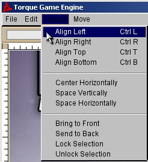
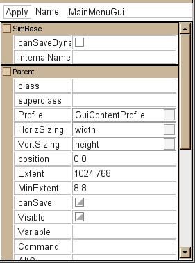

Before we go into detail
on how to use the GUI Editor, let's take a quick look at the major tools it
offers. You can open Torque's GUI Editor by pressing the F10 key found at the top
of your keyboard. Once you open the GUI Editor you will be presented with a
screen that looks something like Figure 3.
Figure 3
At the top of the GUI Editor is the menu bar. Here, you'll find various utility functions to help you easily edit GUI controls. The first item on the menu bar is the File dropdown as seen in Figure 4. It contains options for creating a new GUI, opening an existing GUI, saving the current GUI, and the ability to toggle the GUI Editor off. The second item on the menu bar is the Edit dropdown, as seen in Figure 5. Here you will find options for cut, copy, paste, and a very handy Select All command, which will select all the GUI controls in the editor at once.
Figure 4
Figure 5
The third item on the
menu bar is the Layout dropdown as seen in Figure 6. This dropdown contains
various helper actions which allow you to determine the layout and position
aspects of a GUI control. Align Left, Align Right, Align Top, and Align Bottom
help you control the alignment of your GUI control, as their names suggest.
Bring to Front and the Send to Back options will allow
you to control the drawing order of the GUI controls. The fourth item on the
menu bar is the Move dropdown as seen in Figure 7. Here you will find various
utilities to help you more precisely position your GUI controls.

Figure 6
Figure 7
Just below the menu bar are three dropdown menus. The first dropdown to the far left, shown in Figure 8, contains a list of all the new GUI elements you can add to your canvas. Located in the middle, second dropdown menu (Figure 9), allows you to switch between previously saved GUI windows/collection of controls. Clicking on an existing control will close your current control and load the selected one. Located on the far right and shown in Figure 10, is a menu which allows you to view and edit your GUI in different resolutions.
Figure 8
Figure 9
Figure 10
To the far right of the
GUI Editor, there is a long frame that stretches over the entire height of the
screen, as seen in Figure 11. This pane contains the GUI Tree View (Figure 12)
and the Inspector Dialog (Figure 13). The GUI Tree View displays all the
controls for the current screen in a hierarchical list. This list will help you
select the various controls you've created as well is determine at a glance
which controls are children of other controls.
The Inspector Dialog is
below, and it contains various control options and properties based upon the
kind of GUI control you currently have selected. You will do most, if not all,
of your control editing here. The most common options are the profile - which
allows you to further define how a control looks and acts, position - which
contains a space delimited set of values which describe where on screen the
control is placed, and the extent field - which defines the size of the
control. The entire right-hand vertical pane, which separates the GUI screen
from the frame, can be dragged to allow you to expose more of the working
screen or easily read and edit the GUI Tree View and the Inspector Dialog
fields.
Figure 11
Figure 12

Figure 13